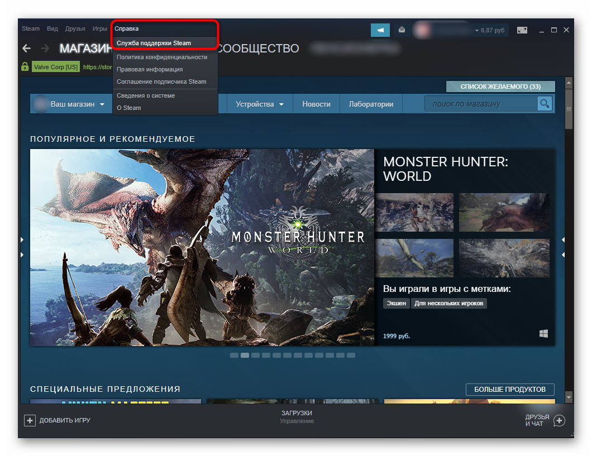

Как написать в поддержку Стим
Когда появляются неразрешимые вопросы в работе со Steam-аккаунтом, пользователям рекомендуется обращаться в техническую поддержку, а не искать решения проблемы в ненадежных источниках глобальной сети. Существует несколько доступных способов обращения к разработчикам, но далеко не каждый пользователь знает, как правильно написать в техподдержку – поговорим об этом далее.
| Техподдержка после входа в аккаунт ↓ | Техподдержка, если нет доступа к аккаунту ↓ | |
Есть доступ к аккаунту Steam
В том случае, когда пользователь может войти в свой аккаунт клиента, обратиться в техническую поддержку Steam не составит труда. Для этого необходимо открыть программу-клиент и на верхней панели инструментов выбрать «Справка» — «Служба поддержки Steam».

{kind=link}
Далее, система предложит выбрать раздел или игру, в работе с которой возникли трудности.
{kind=link}
От технической поддержки не стоит ждать незамедлительного ответа. Приготовьтесь к тому, что решение вашей проблемы будет отложено на несколько дней, а то и недель. Для ускорения процесса, необходимо правильно сформулировать запрос администраторам. Здесь рекомендуется составить максимально подробное описание сложившейся проблемы с демонстрацией сриншотами (снимок экрана). На скриншоте также желательно пояснить, обвести в кружок, акцентируя внимание на проблеме. Как правильно оформить заявку в суппорт — подробная инструкция есть на странице технической поддержки.
{kind=link}
Не нужно заниматься переводом русского текста на английский язык, поскольку команда разработчиков представлена специалистами, которые владеют и русским языком. Тем не менее разработчики предупреждают о том, что для более качественного и оперативного решения проблемы рекомендуется составить дополнительно более сжатый текст без воды, речевых оборотов, чтобы все было расписано строго по делу. Далее, перевести текст обращения в переводчике.
Если проблема связана с покупкой игры или прочими финансовыми операциями, необходимо приложить имеющиеся доказательства о проведении транзакции – чеки с датой оплаты.
С аккаунта через браузер
Когда мы обращаемся посредствам веб-обозревателя, например, если не запускается программа на ПК, необходимо следовать точно таким же действиям, указанным выше. Единственное отличие – для поиска раздела техподдержки, требуется зайти на страницу поддержки Steam.
{kind=link}
Нет доступа в аккаунта Steam
Многие пользователи забывают пароль, у других неисправен мобильный аутентификатор, у третьих попросту взломали аккаунт и сменили все данные для входа. В таком случае запускаем программу Steam, и в окне, где требуется ввести логин и пароль, нажимаем на кнопку «Не могу войти в аккаунт».
{kind=link}
Далее, сервис предложит выбрать вариант причины отсутствия доступа в свой профиль.
{kind=link}
{kind=link}
Таким образом, мы попали в техническую поддержку без доступа в аккаунт. Теперь необходимо заполнить указанную форму и отправить разработчикам на восстановление профиля.
Для пользователей также был доступен специальный сервис поддержки Steam, где потребуется завести отдельный аккаунт. Сегодня такой возможности, к сожалению нет.
Важно! Правильно заполнить все данные, которые требует клиент-Steam. Так, на указанную электронную почту для обратной связи придет письмо с возможным решением вашей проблемы.
Мы разобрались, как написать в техническую поддержку Steam – теперь остается лишь ждать действий разработчиков.
Здравствуйте. Меня забанили в стиме по какому-то странному обвинению, что у меня дублированы какие-то вещи на аккаунте. администратор попросил у меня имя которое я использую для входа, мне пришло на e-mail сообшение с кодом для смены каких-то данных на аккаунте, чтобы можно было «снять мне заявление об удалении аккаунта», и при этом когда я прислал ему код, после чего по его словам возникла ошибка и чтобы ее справить он попросил меня провести покупку на стороннем сайте, чтобы проверить как я совершаю покупки и узнать в чем же дело. Я отказался и он сказал что банит мой аккаунт. Теперь я не могу войти. Собственно, я хочу написать в поддержку чтоб ситуацию проверили и мне вернули аккаунт. Как это сделать, пожалуйста опишите для других людей, потому что если это мошенничество то что с этим делать не понятно.
Меня взломали 2 раза помогите вернуть
украли аккаунт не могу востановит капча постоянно вводится не верно
Очень занимательно, но не даете ответ на самый главный вопрос — Как связаться с техподдержкой, если ты вообще не можешь войти в свой аккаунт?
Мой аккаунт никто не взламывал, но чудным образом с 1 июля я просто не могу в него войти. Никакие танцы со сменой пароля не помогают, ибо меняешь его и тут же его вводишь, чтобы в войти в свой аккаунт, и система напрочь отказывается принимать новый пароль, который был одобрен при смене. И так уже несколько раз.
Такое ощущение, что сознательно дурят мозги с паролем, чтобы вконец заблокировать мой аккаунт и тем самым присвоить деньги, которые я заплатил за игру.
Видимо все делаете для того, чтобы доверие к вам у людей падало и они переходили к вашим прямым конкурентам (другим игровым площадкам) или чтобы мы скачивали пиратские версии игр.
такая же фигня. крутит логин, пароль, телефон, почту по кругу и в итоге превышен лимит попыток восстановления!
украли аккаунт на котором были деньги и игры
После перезагрузки ПК с Win 7 Домашний на Win 10 Pro, уничтожен Steam. Пытаюсь войти в свой аккаунт (idey51) в браузере после смены пароля — не могу: ак или пароль не верен!?
Win 10 Pro не совместим со Steam!? , хотя данные о установке в 10-ку есть на сайтах.
Помогите!!! Hades’ Star — пропал!!
С уважением, vaa108612@gmail.com
Здравстуйте, походу мой аккаунт стима украли не могли бы мне помочь человек который украл аккаунт сменил пароль и почту
после переустановки винды тупо не могу войти в стеам!!!!!!! вы хоть окромя хапанья бабала немного работайте над программой!!!!!
что делать если стим сам удаляетя?